V1.8.6.1 — Actual Structural Frame QA
실제 브라우저 캡처. Concept/generated artwork 없음.
상세 보고서 · 수치 비교 · 11 Normal pixel comparisons · Production UI checks
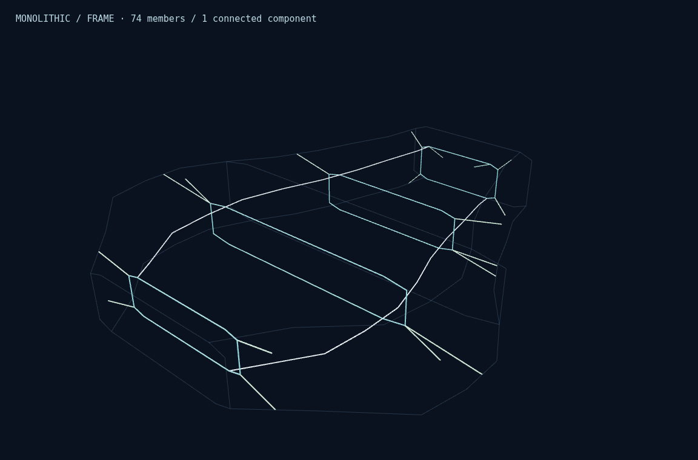
MONOLITHIC · 74 members · 16 actual Hull contact witnesses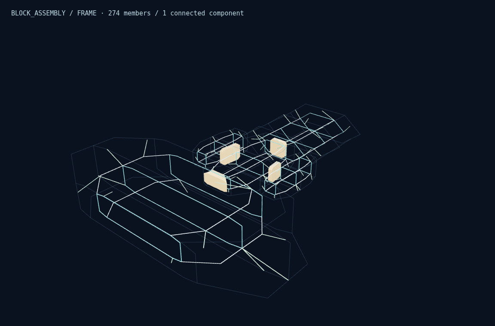
BLOCK_ASSEMBLY · 274 members · 60 actual Hull contact witnesses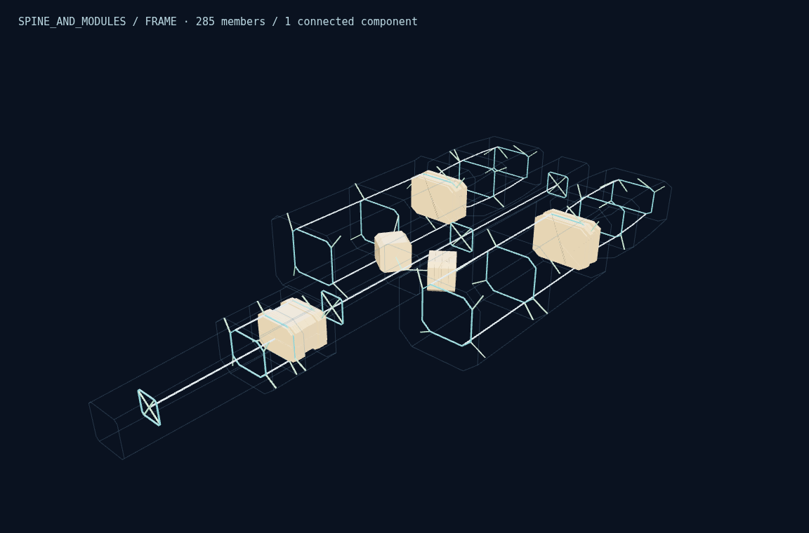
SPINE_AND_MODULES · 285 members · 60 actual Hull contact witnesses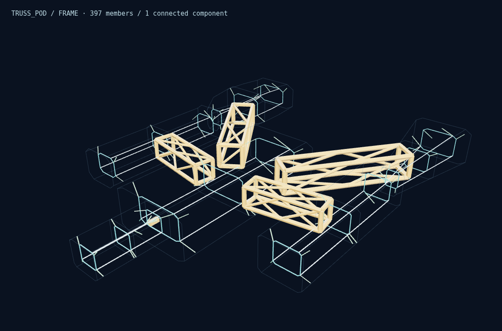
TRUSS_POD · 397 members · 72 actual Hull contact witnesses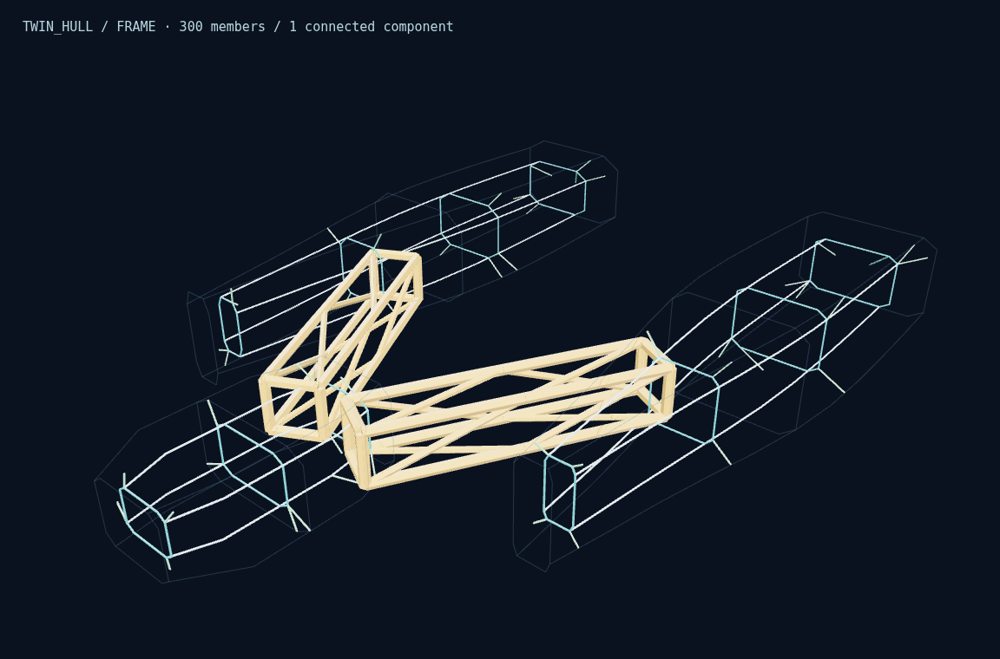
TWIN_HULL · 300 members · 44 actual Hull contact witnesses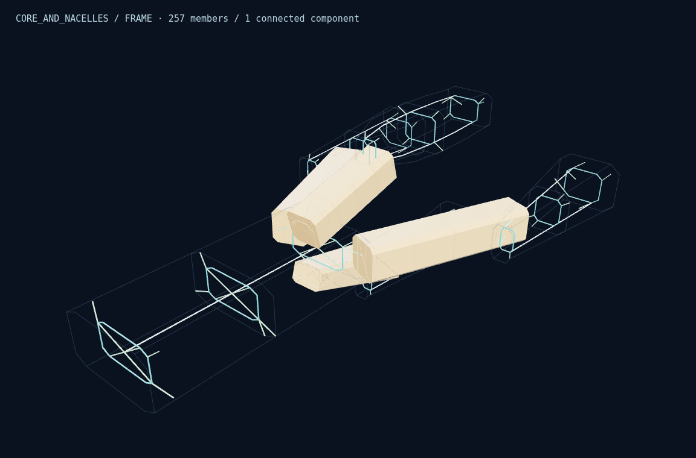
CORE_AND_NACELLES · 257 members · 60 actual Hull contact witnesses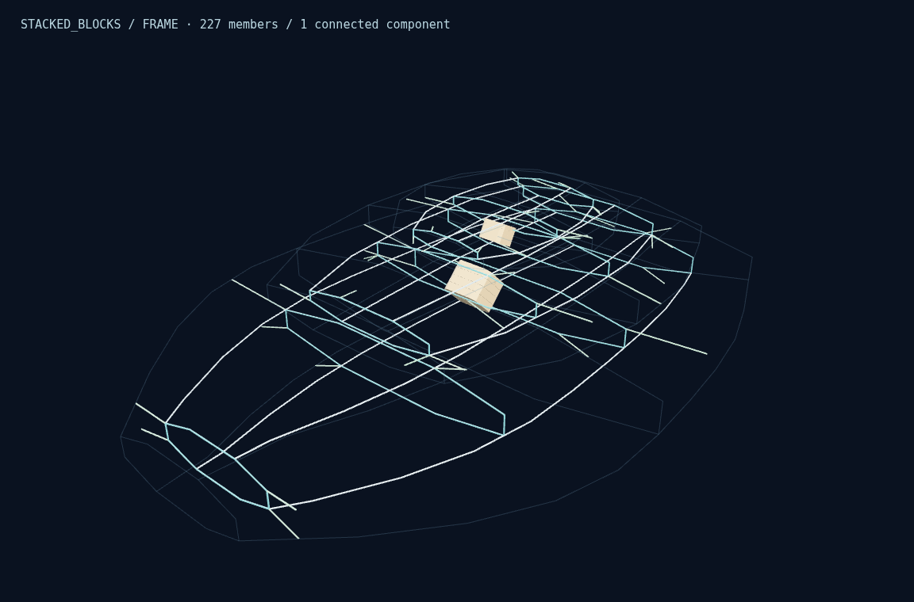
STACKED_BLOCKS · 227 members · 44 actual Hull contact witnesses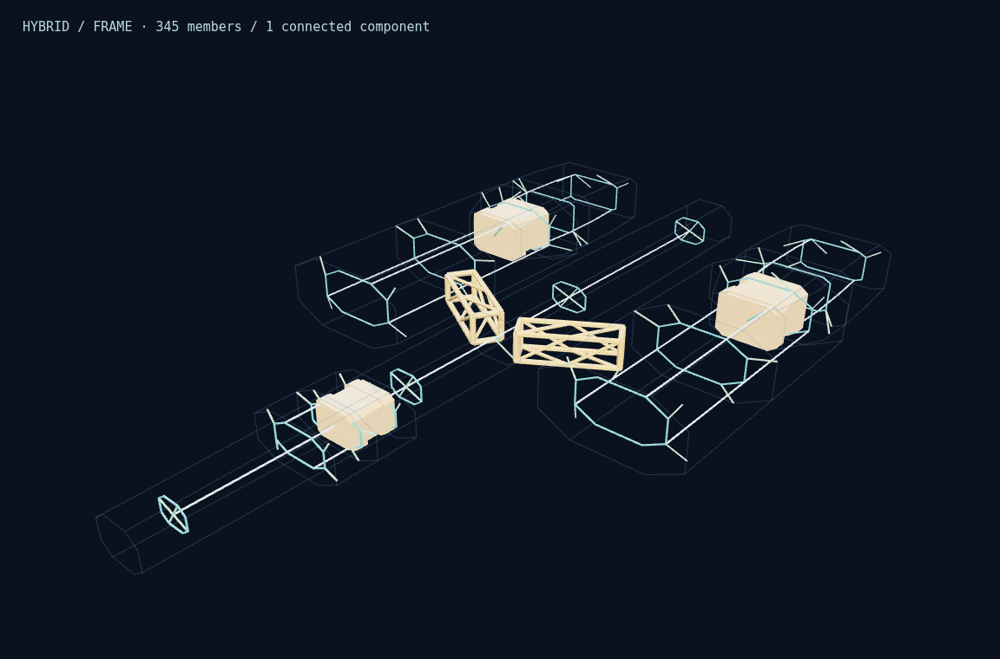
HYBRID · 345 members · 60 actual Hull contact witnessesConnectivity / Critical / Mass Inspector
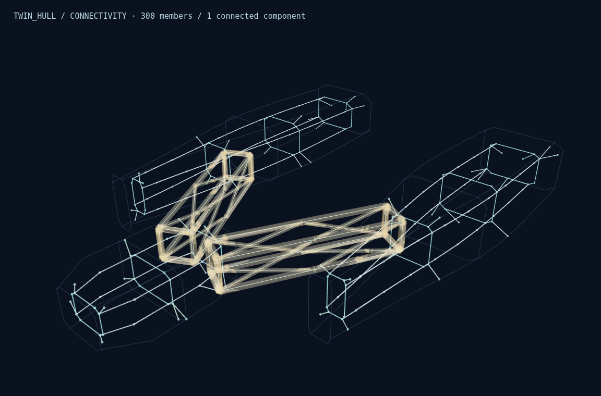
Real connectivity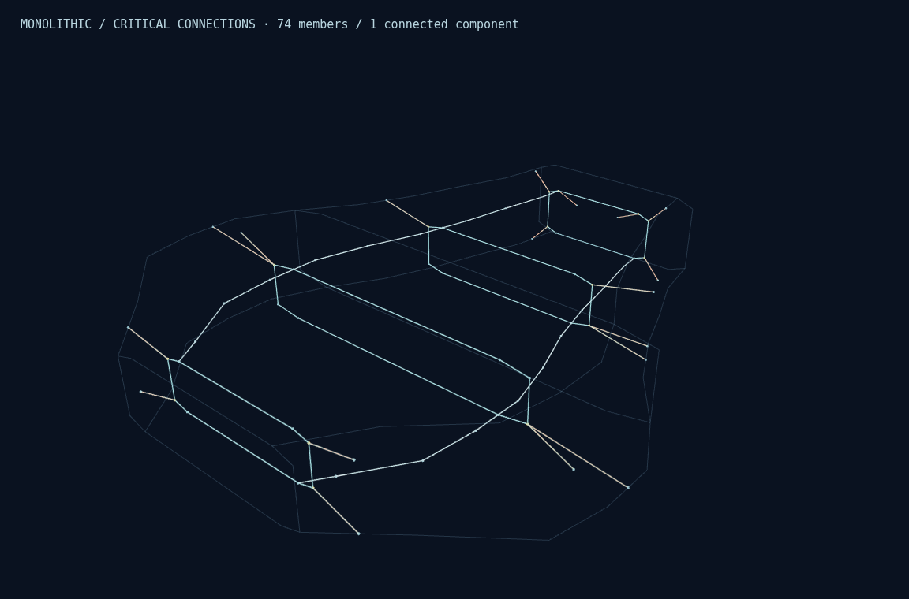
Critical connections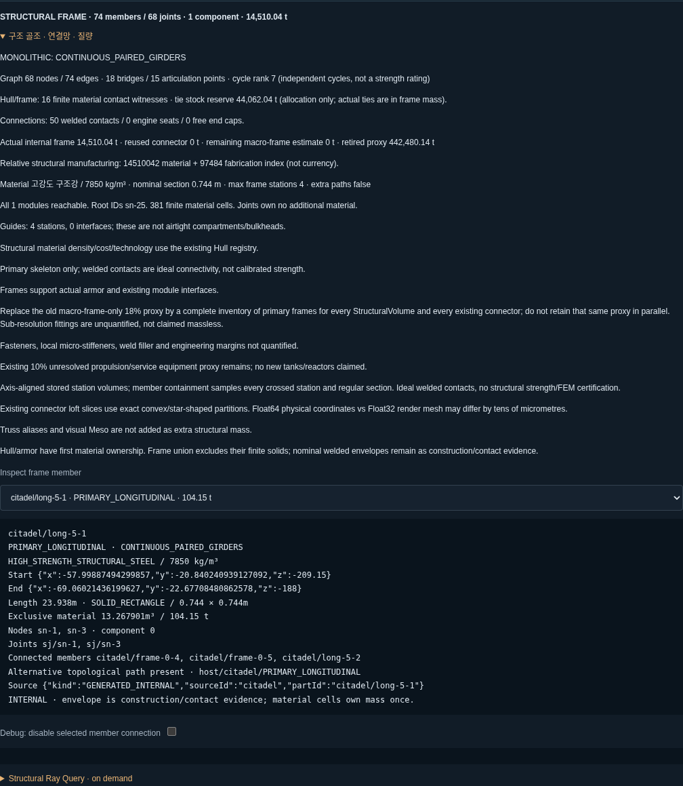
Actual geometry/material/mass Inspector